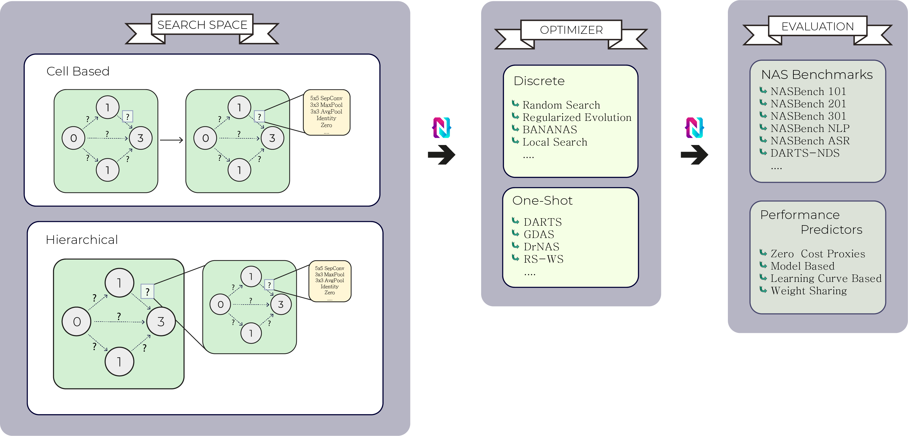

Home
NASLib is a modular and flexible framework created with the aim of providing a common codebase to the community to facilitate research on Neural Architecture Search (NAS). It offers high-level abstractions for designing and reusing search spaces, interfaces to benchmarks and evaluation pipelines, enabling the implementation and extension of state-of-the-art NAS methods with a few lines of code. The modularized nature of NASLib allows researchers to easily innovate on individual components (e.g., define a new search space while reusing an optimizer and evaluation pipeline, or propose a new optimizer with existing search spaces). It is designed to be modular, extensible and easy to use.
NASLib was developed by the AutoML Freiburg group and with the help of the NAS community, we are constantly adding new search spaces, optimizers and benchmarks to the library. Please reach out to zelaa@cs.uni-freiburg.de for any questions or potential collaborations.

Setup | Usage | Docs | Contributing | Cite
Queryable Benchmarks
NASLib allows you to query the following (tabular and surrogate) benchmarks for the performance of any architecture, for a given search space, dataset and task. To set them up, simply download the benchmark data files from the these URLs and place them in naslib/data.
| Benchmark | Task | Datasets | Data URL | Required Files |
|---|---|---|---|---|
| NAS-Bench-101 | Image Classification | CIFAR10 | cifar10 | naslib/data/nasbench_only108.pkl |
| NAS-Bench-201 | Image Classification | CIFAR10 CIFAR100 ImageNet16-120 |
cifar10 cifar100 imagenet |
naslib/data/nb201_cifar10_full_training.pickle naslib/data/nb201_cifar100_full_training.pickle naslib/data/nb201_ImageNet16_full_training.pickle |
| NAS-Bench-301 | Image Classification | CIFAR10 | cifar10 models |
naslib/data/nb301_full_training.pickle naslib/data/nb_models/... |
| NAS-Bench-ASR | Automatic Speech Recognition | TIMIT | timit | naslib/data/nb-asr-bench-gtx-1080ti-fp32.pickle naslib/data/nb-asr-bench-jetson-nano-fp32.pickle naslib/data/nb-asr-e40-1234.pickle naslib/data/nb-asr-e40-1235.pickle naslib/data/nb-asr-e40-1236.pickle naslib/data/nb-asr-info.pickle |
| NAS-Bench-NLP | Natural Language Processing | Penn Treebank | ptb, models | naslib/data/nb_nlp.pickle naslib/data/nbnlp_v01/... |
| TransNAS-Bench-101 | 7 Computer Vision tasks | Taskonomy | taskonomy | naslib/data/transnas-bench_v10141024.pth |
For NAS-Bench-301 and NAS-Bench-NLP, additionally, you will have to install the NASBench301 API from here.
Once set up, you can test if the APIs work as follows:
python test_benchmark_apis.py --all --show_error
You can also test any one API.
python test_benchmark_apis.py --search_space <search_space> --show_error
Scripts for running multiple experiments on a cluster
The scripts folder contains code for generating config files for running experiments across various configurations and seeds. It writes them into the naslib/configs folder.
cd scripts
bash bbo/make_configs_asr.sh
It also contains scheduler.sh files to automatically read these generated config files and submits a corresponding job to the cluster using SLURM.
Cite
If you use this code in your own work, please use the following bibtex entries:
@misc{naslib-2020,
title={NASLib: A Modular and Flexible Neural Architecture Search Library},
author={Ruchte, Michael and Zela, Arber and Siems, Julien and Grabocka, Josif and Hutter, Frank},
year={2020}, publisher={GitHub},
howpublished={\url{https://github.com/automl/NASLib}} }
@inproceedings{mehta2022bench,
title={NAS-Bench-Suite: NAS Evaluation is (Now) Surprisingly Easy},
author={Mehta, Yash and White, Colin and Zela, Arber and Krishnakumar, Arjun and Zabergja, Guri and Moradian, Shakiba and Safari, Mahmoud and Yu, Kaicheng and Hutter, Frank},
booktitle={International Conference on Learning Representations},
year={2022}
}

NASLib has been used to run an extensive comparison of 31 performance predictors (figure above). See the separate readme: Predictors and our paper: How Powerful are Performance Predictors in Neural Architecture Search?
@article{white2021powerful,
title={How Powerful are Performance Predictors in Neural Architecture Search?},
author={White, Colin and Zela, Arber and Ru, Robin and Liu, Yang and Hutter, Frank},
journal={Advances in Neural Information Processing Systems},
volume={34},
year={2021}
}